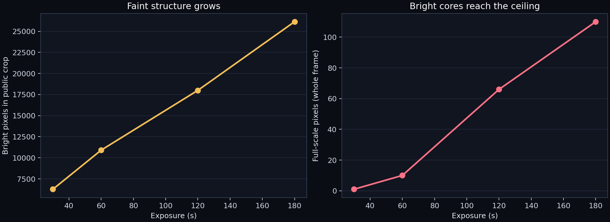

Research record
EXOhSPEC publications.
Peer-reviewed journal articles and proceedings spanning optical and mechanical design, flexible reduction, active control, fibre behaviour, modal noise and calibration.

- DOI
Use of solid fused silica etalon with broad-band metallic coatings for calibration of high-resolution optical spectrograph
S. Ghosh, W. Martin, K. Kunverji & H. R. A. Jones
- DOI
A study of transmission properties in tapered graded-index fibre
P. Choochalerm, B. Martin, H. Jones & S. Usher
- DOI
Mitigating modal noise in multimode circular fibres by optical agitation using a galvanometer
S. Ghosh et al.
- Paper
Incoherent light in tapered graded-index fibre: a study of transmission and modal noise
P. Choochalerm et al.
- DOI
A small actively-controlled high-resolution spectrograph based on off-the-shelf components
H. R. A. Jones et al.
- Paper
Transmission properties of tapered optical fibres: simulations and experimental measurements
P. Choochalerm et al.
- DOI
HiFLEx — a highly flexible package to reduce cross-dispersed echelle spectra
R. Errmann et al.
- DOI
EXOhSPEC folded design optimization and performance estimation
E. Lhospice et al.
- DOI
Highly replicable, low-cost, portable, general-purpose, high-resolution spectrometer
A. Baker et al.
- DOI
EXOhSPEC collimator mechanical design
S. Kawinkij et al.
Programme documents
Technical background
Read the original design outline, acquisition and guidance note, and the HiFLEx source repository.